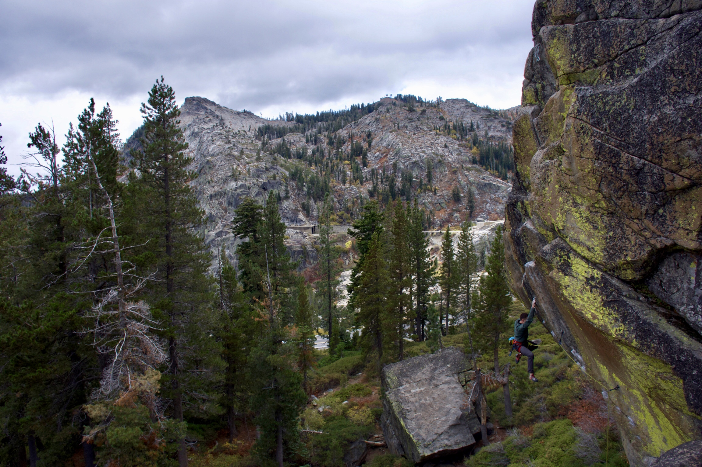
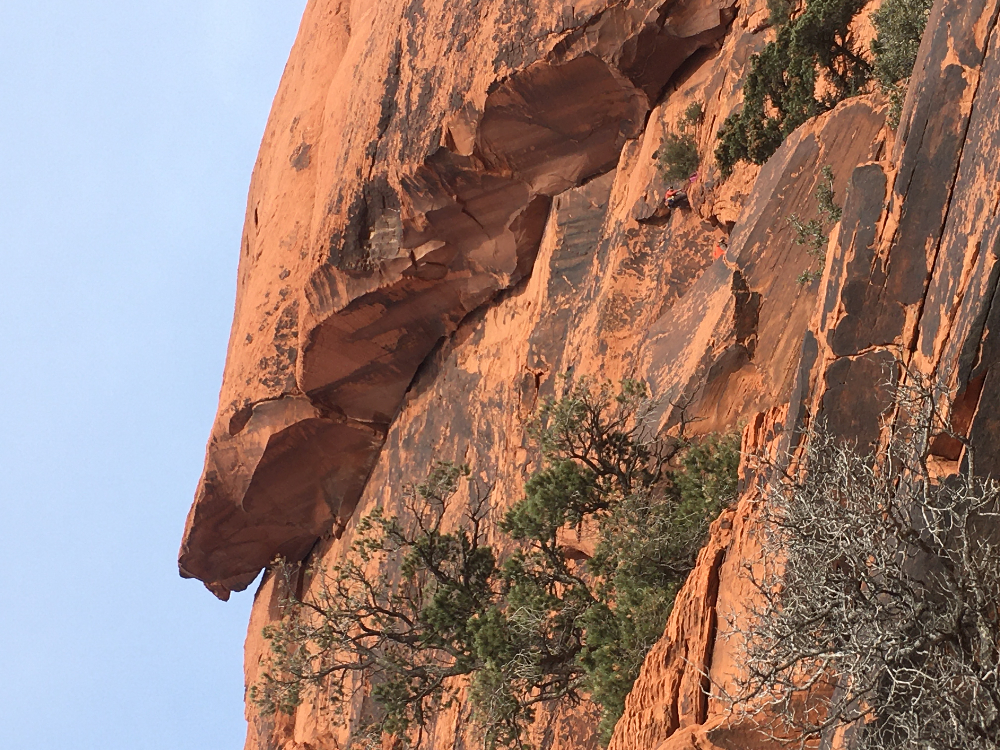
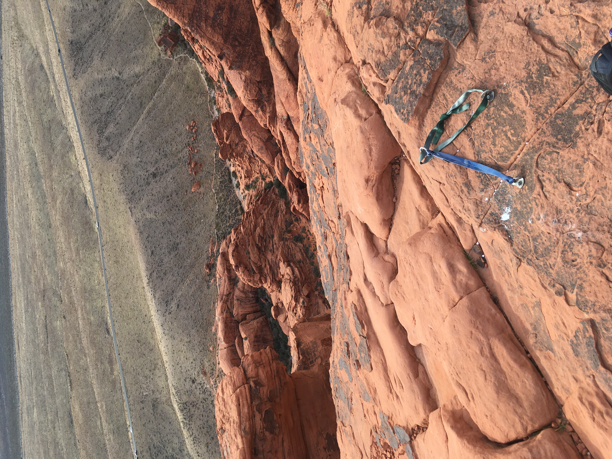

Hey, what's up
Is this working?

This is my adorable dog Chico!
He saw some surfers out on the water that morning and was worried about their safety.

Including another photo here because I think it's a really cool photo but it also shows just how beautiful the Lake Tahoe area is. If you haven't visited, go visit once the pandemic is under control. There's a video of a pro climber out there who climbed this with no rope and hung upside down from his feet on the ledge several feet above where I am in this picture.

If you look really carefully, you can see a couple of climbers just below the middle line and to the right side of the picture. Look right where the corner formed by the two walls meeting begins. This gives you a sense of how tall this route is - around 250 feet. It's divided into two sections. The bottom runs mostly along that corner and you use the crack to put cams into the wall to protect yourself. Towards the top of that section, the routes goes left out to an anchor. I led the bottom section. The upper section also uses the crack, but here the crack is much much wider. Eventually, it gets wide enough that you can actually wedge yourself into it. My friend did this and climbed for probably thirty or forty feet without putting in any protection. Fortunately he didn't slip. When I reached the top, I found him grinning at me because of how proud he was about going so long without putting in gear. Certainly braver than me!

This is where my friend was sitting, at the top of the climg. From here, there are two ways down. You can either rappel back to the anchor at the middle of the route and from there back to the base. The alternative, which we did, was scramble down the backside of the formation. We didn't really know the way, so it was a lot of trial and error. As long as you're headed downward, you're doing it right.